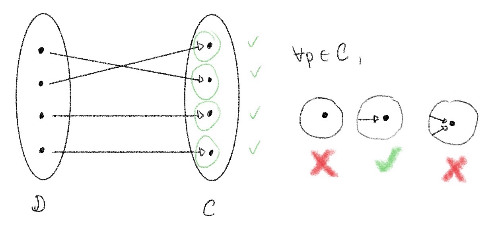
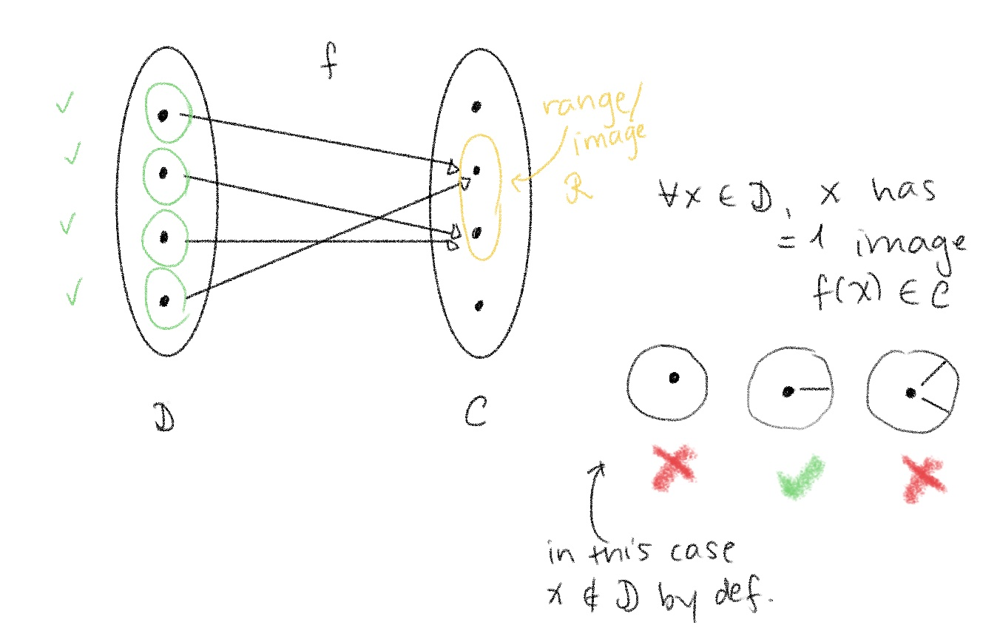
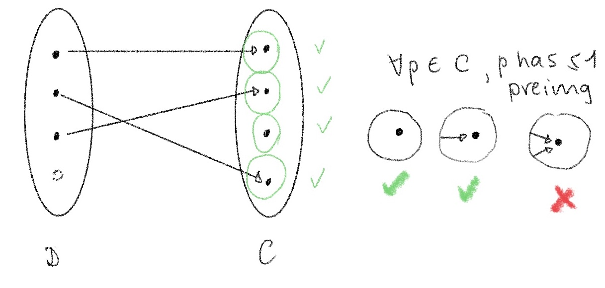
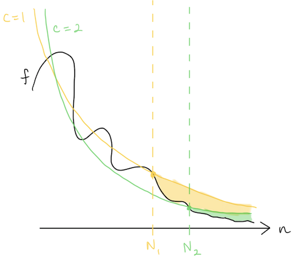
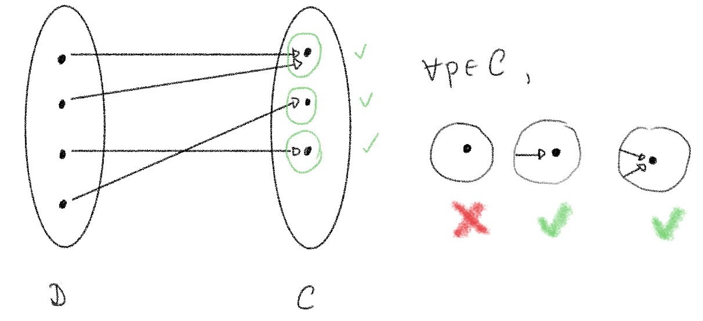
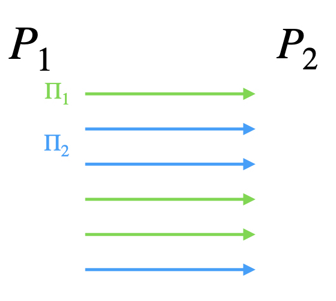
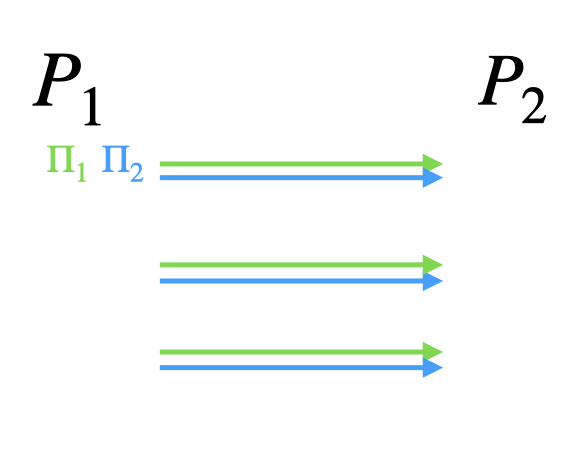
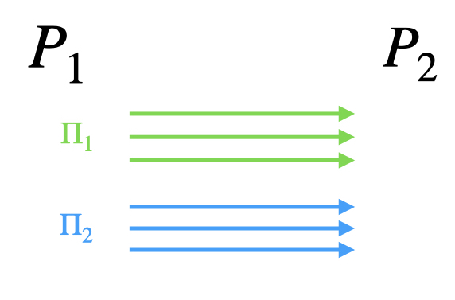

General
- Advantage
- The probability of an adversary violating the security property of a scheme. The advantage is generally defined with respect to a security game. For secure constructions, the adversary's advantage usually shown to be small by showing it is bounded by a negligible function.
- Adversary
- Some dishonest entity that will try to break a primitive or protocol. See Threat Models for the types of adversaries, each with different capabilities.
- Bijective
- A function which is both injective and surjective, that is, every element in the codomain has exactly one preimage in the domain. This implies that the domain and codomain have equal cardinalities (any element of the domain that doesn't map to anything is, by definition, not included in the domain). 
- Black-box
- Treating some algorithm or protocol as a "black box" that hides the inner mechanism, allowing only the inputs and outputs to be seen. For instance, black-box constructions are constructions that use some building block as a black box without caring about its inner workings (only its generic input-output behavior).
- Correctness
- A property of a scheme that ensures it works correctly and does not trivially meet the definition of the scheme. For example, we usually require that decryption and encryption are inverses, or that sharing and reconstruction are inverses.
- Cryptographic Primitives
- Basic building blocks for cryptographic protocols.
- Deterministic
- A function that always proceeds in the same way when run on the same outputs. Alternatively, the inputs directly determine the output. Compare to randomized.
- Feasibility result
- Field
- A set of elements F with two binary operations + and • (addition and multiplication) that satisfy a set of properties called the field axioms (specifically associativity, commutativity, identity, and invertibility of both operations along with distributivity of multiplication over addition). Both the rational numbers and the real numbers are fields.
- Functionality
- A particular set of capabilities or properties to be achieved. For example, many protocols exist that implement the functionality of public key encryption. In this way, a functionality is abstract and independent of implementation details, and cryptosystems are build to achieve a functionality. Often, to prove security, a protocol is compared to an ideal functionality, to show that it meets the same security properties.
- Function
- A mathematical object that maps each input to at most one output. 
- Group
- A set of elements \(G\) with some binary operation • (the group operation) that satisfies a set of properties called the group axioms (specifically associativity, identity, and invertibility). The integers form a group under addition.
- Hardness assumption
- A problem, such as factoring, which is assumed to be hard. A cryptographic scheme's security may hinge on the adversary not being able to solve this problem, and if the assumption turns out not to hold, the proof of security is invalidated. See Assumptions for more details.
- Independent and identically distributed (i.i.d.)
- Two random variables are i.i.d. if they have the same probability distribution and are independent of each other.
- Indistinguishable
-
Indistinguishability refers to how hard two probability distributions are to tell apart.
- Perfectly indistinguishable
- Two distributions are perfectly indistinguishable if they are identical: they are the same distribution.
- Statistically indistinguishable
- Two distributions are statistically indistinguishable if they are statistically "close", ...
- Computationally indistinguishable
- Two distributions are computationally indistinguishable if distinguishing them would require solving some computationally intractable problem.
- Injective
- A function such that every element of the codomain is the image of at most one element of the domain. Equivalently, \(f(a)=f(b)\) implies \(a=b\).Also known as one-to-one. Compare to surjective, bijective. 
- Linear operations
- Addition and scalar multiplication.
- Min-entropy
- Negligible function
- A function that asymptotically (i.e. after some fixed point) decreases faster than any inverse polynomial:

Formal Definition
A function \(f\) is negligible if for all natural numbers c, there exists a natural number \(N\) such that \(f(n) < n^{-c}\) for all \(n > N\).
- Norm
-
A function from a vector space to non-negative (real) numbers. In cryptography, we mostly deal with integers, so norms usually map an integer vector to a single non-negative integer. A norm can be thought of as a sort of distance measure because it must meet the following three properties:
- Triangle inequality, i.e., \(\mathsf{norm}(\vec{x} + \vec{y}) \leq \mathsf{norm}(\vec{x}) + \mathsf{norm}(\vec{y})\)
- Linearity up to absolute value (absolute homogeneity), i.e., \(\mathsf{norm}(s\vec{x}) = \lvert s \rvert \mathsf{norm}(\vec{x})\) for any scalar \(s\)
- Zero only at the origin, i.e., \(\mathsf{norm}(\vec{x}) = 0\) iff \(\vec{x} = \vec{0}\)
Some common norms applied to a vector \(\vec{x} = (x_1, \dots, x_\ell)\) are:
- Infinity norm: \(\lVert \vec{x} \rVert_\infty = \max(\lvert x_i \rvert)\)
- Euclidean norm (aka L2 norm): \(\lVert \vec{x} \rVert_2 = \sqrt{\sum_i x_i^2}\)
- L1 norm: \(\lVert \vec{x} \rVert_1 = \sum_i \lvert x_i \rvert\)
These are special cases of the Lp norm \(\lVert \vec{x} \rVert_p = (\sum_i \lvert x_i \rvert^p)^{1/p}\).
- Parameterized
- Probabilistic polynomial time (PPT)
- A potentially probabilistic algorithm that runs in polynomially many steps. In cryptography, we usually consider PPT adversaries (polynomial in the security parameter).
- Protocol
- A sequence of messages exchanged between parties to compute some functionality. A protocol specifies how parties should compute their messages based on their knowledge and the other parties' responses. Often denoted by the variable \(\Pi\).
- Probabilistic
- Randomized
- A function whose output is influenced by some additional source of randomness. Running the function twice on the same inputs may result in a different outcome. Compare to deterministic.
- Ring
- Security game
- A game is a challenge in which an attacker (called the adversary and usually denoted by a curly letter \(\mathcal{A}\)) is given some information and tries to break the security property of the scheme. \(\mathcal{A}\) "wins" the game if it can give an answer that proves it broke the security property of the scheme. For an example, see the CPA-security game. See also Game-based proofs.
A security game is sometimes also called an experiment. - Security parameter
- Denoted by \(\lambda\) (or sometimes \(\kappa\)), this is a measure of how hard it is to break the security of a system. Generally, an adversary's advantage in attacking a scheme should be negligible in the security parameter; thus, the parameter needs to be large enough that the specific negligible function also corresponds to a sufficiently low success probability in practice. Computational security parameters are generally \(\lambda = 128\) or \(\lambda = 256\) and correspond to the size of the instance of the computational problem to be solved; information-theoretic security parameters can be lower and correspond directly to an adversary's statistical success probability. (See also the Wikipedia page.)
- Surjective
- A function such that every element of the codomain has at least one preimage in the domain. Also known as onto. Compare to injective, bijective. 
- Sybil attack
- Attack in which an adversary creates multiple fake identities (parties) it controls in order to increase its influence in a network. To an outside observer these machines can't be distinguished from other honest parties/identities. One way to prevent this is asking new users to perform a somewhat costly registration process as a way to rate-limit creating new identities.
- Uniform
- A distribution is uniform, or a value uniformly distributed, if every outcome is equally likely. We may say that a value is "drawn uniformly at random". A uniform distribution over \(N\) elements means each of the elements is drawn with probability \(1/N\).
- Unary
- Compared to binary, which represents numbers using two symbols (0 and 1), the unary representation of a number consists only of 1s. Specifically, a number \(n\) is represented in unary as a string of \(n\) 1s (e.g., 5 in unary would be 11111). Security parameters are usually given as an input in their unary representation, i.e. \(1^\lambda\).
- "Without loss of generality"
- This means that only one particular case is analyzed, but the argument holds equally in the other cases.
Complexity Theory
- Big-O notation
- Written \(O(g(n))\) for some function \(g\), this is an upper bound on the computational complexity of an algorithm/protocol/etc. when \(n\) is large enough (i.e., an asymptotic bound). Put another way, \(f(n) \in O(g(n))\) means \(f(n)\) grows asymptotically no faster than \(g(n)\).
- Big-omega notation
- Written \(\Omega(g(n))\) for some function \(g\), this is a lower bound on the computational complexity of an algorithm/protocol/etc. when \(n\) is large enough (i.e., an asymptotic bound). Put another way, \(f(n) \in \Omega(g(n))\) means \(f(n)\) grows asymptotically no slower than \(g(n)\).
- Big-theta notation
- Written \(\Theta(g(n))\) for some function \(g\), this is an approximation of the computational complexity of an algorithm/protocol/etc. when \(n\) is large enough (i.e., an asymptotic bound). Put another way, \(f(n) \in \Theta(g(n))\) means \(f(n)\) grows asymptotically at the same rate as \(g(n)\).
Note: \(f(n) \in \Theta(g(n)) \iff f(n) \in O(g(n))\) and \(f(n) \in \Omega(g(n))\).

Further Reading
Khan Academy has good explanations of the concepts of Big-O, Big-Omega, and Big-Theta, and the diagrams and wording here are based on those pages and a nice summary comment by the user Cameron.
- Polylog(n)
- Polynomial in the logarithm, i.e. \(poly(\log(n))\).
Complexity Classes
- P
- The class of decision problems (i.e., decide if \(x\) is an instance of some language \(L\); see also ZK background) solvable in polynomial time by a Turing machine. Put another way, this is the class of decision problems solvable by a uniform family of polynomial-size Boolean circuits1.
- P/poly
- Same as the class \(P\) except that the Turing machine is allowed a trusted "advice string" of size \(O(poly(n))\), where \(n\) is the size of the input. This is also known as the non-uniform version of \(P\), since the Turing machine can depend on the specific instance in question and can therefore vary widely between instances (modeled by using the advice string to inform the Turing machine's layout).
- PPAD
- NC
-
"Nick's Class." \(NC^i\) is the class of decision problems solvable by a uniform family of poly-size Boolean circuits (so far, same as \(P\)) of depth \(O(log^{i}(n))\) and fan-in 2. (Therefore, \(NC^0\) is the class of decision problems solvable by constant-depth bounded fan-in circuits.) Then \(NC\) is the union of \(NC^i\) over all \(i \geq 0\).
It is known that \(NC \subseteq P\).
- NP
- TC\(^0\)
-
The class of decision problems solvable by poly-size constant-depth circuits with unbounded fan-in using AND, OR, NOT, and threshold gates.
It is known that \(TC^0 \subseteq NC^1\).
Further Reading
Many more complexity classes can be found on the Complexity Zoo wiki.
Composition
- Concurrent composition
- Two protocols \(\Pi_1, \Pi_2\) running concurrently are run with their messages arbitrarily interleaved. In the two-party case:

In general, concurrent composition of secure protocols does not maintain security (against malicious adversaries). A special case of concurrent composition is parallel composition. Compare to sequential composition. - Parallel composition
- Two protocols \(\Pi_1, \Pi_2\) running in parallel run in "lockstep", i.e. the first round messages of both are sent together, followed by the second, and so on. In the two-party case:

In general, composing secure protocols in parallel does not maintain security (against malicious adversaries). Parallel composition is a special case of concurrent composition. Compare to sequential composition. - Hybrid composition
Composition Theorem
If \(\rho_1, \ldots, \rho_m\) are secure protocols for computing the functionalities \(f_1, \ldots, f_m\), and if \(\Pi\) is a secure protocol for computing \(f\) in the \((f_1, \ldots, f_m)\)-hybrid world, then the composed protocol \(\Pi^{\rho_1, \ldots, \rho_m}\) is a secure protocol for \(f\). That is, if we have a protocol that can secure compute some function \(f\) given it has access to some other functionality/ies, and we have protocols for securely computing those functionality/ies, we can "plug in" those protocols into our main protocol and it will be secure.
- Sequential composition
- Two protocols are composed sequentially when they are run back-to-back, i.e. one protocol only begins after the other has concluded. In the two-party case:

Sequential composition of two secure protocols is still secure! Compare to concurrent composition, parallel composition.
Threat Models
- Malicious adversary
-
An adversary that can deviate arbitrarily from the protocol it is participating in. That is, it doesn't follow the rules and may send malformed, empty, or incorrect messages, not send a message when it is supposed to or vice versa, and otherwise behave maliciously. Also known as active adversary; compare to semi-honest adversary.
Notation
We sometimes use * as a superscript to denote that a party may be malicious, i.e. cheat and deviate from the protocol. For instance, the party \(S^*\) in a commitment scheme denotes a potentially malicious sender.
- Semi-honest adversary
- An adversary that follows the protocol and acts honestly, but tries to learn as much as possible from the information it sees. Also known as honest-but-curious (HbC) or passive.
Less standard threat models
The following threat models are newer and thus less widely used than the ones until now. It's possible different papers use different terms for them or that the names will change in the future.
- Fail-stop adversary
- Slightly stronger than the semi-honest adversary; follows the protocol the way a semi-honest adversary does, but can choose to abort at any time (or cause parties it controls to abort).
- Semi-malicious adversary
- Lies between the semi-honest and malicious cases. The adversary must follow the protocol, but it can arbitrarily and adaptively choose the inputs and randomness used in the protocol. See [BHP17 §4]; introduced by [AJL+12 §5].
- Uniform adversary
- A uniform adversary uses the same strategy regardless of the protocol instance. Compare to non-uniform adversary.
Security Definitions & Notions
- Adaptive security
- Secure against an adaptive adversary, which can choose its actions dynamically and based on the responses of a game/protocol/etc. In particular, in multi-party protocols, it can choose which parties to corrupt during the course of the protocol (based on the messages they send) instead of fixing a set upfront. This is also called full security.
- Computational security
- The security of the scheme can be reduced to solving some problem that is assumed to be computationally hard, i.e. its security rests on a computational assumption.
- Covert security
- Forward secrecy
- In key agreement protocols, this is the guarantee that the compromise of long-term secrets in some session \(t\) does not affect the security of any sessions that took place before \(t\) (i.e., those messages still cannot be decrypted). This also implies that the compromise of the session key for \(t\) does not expose previous sessions.
- Information-theoretic security
- ... See also unconditional security.
- Perfect security
- Security is absolute, for example based on two distibutions which are perfectly indistinguishable.
- Selective security
- In this case, the adversary must pick (select) its messages/queries upfront. Also called non-adaptive or static security. Compare to adaptive security.
- Statistical security
- Another term for information-theoretic security.
- UC security
- Security in the "universal composability" framework. This is a simulation-based security notion; schemes which are proven UC-secure are guaranteed to maintain their security properties even under arbitrary composition.
- Unconditional security
- Usually used interchangeably with information-theoretic security. However, it can also be used to mean security that is not based on any computational assumption.
Models
Notation
The phrase used is "Scheme is secure in the X model".
- Oracle
- Algebraic Group Model (AGM)
- This is a stronger assumption than the standard model, but weaker than the GGM. The model assumes that the adversary is an algebraic adversary, meaning that for any group element it outputs, it also knows its representation in the group. This differs from the GGM because the adversary knows and can exploit the group structure.
- Generic Group Model (GGM)
- This model assumes that the adversary is given access to a randomly chosen (encoding of a) group instead of the groups used in practice, which have efficient encodings. The adversary also has access to an oracle for the group function. (This is like how, in the random oracle model, we give the adversary access to a random oracle instead of a real hash function used in practice.)
- Quantum Random Oracle Model (QROM)
- An analogue of the ROM for quantum adversaries.
- Random Oracle Model (ROM)
- A proof paradigm that models hash functions as random oracles, i.e. an oracle that outputs a random number for any input (but outputs the same number when given the same input). Read more here. Variants include the programmable ROM and others.
- Standard Model
- This model assumes only that the adversary is limited by time or computational power; it makes no further assumptions (the way, e.g., the ROM does). Proofs in the standard model therefore usually rest on a computational hardness assumption, but no idealized cryptographic primitives, and are thus very difficult. In this way this model is "better" than the others listed here because it assumes less.
Also known as the bare model or plain model.
-
in logspace, i.e. using O(log(n)) memory. ↩